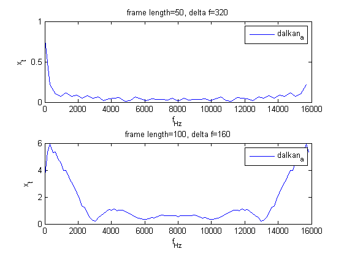

clear all;
sampleRate = 16000;
da_a_file = strcat('dalkan_a');
da_i_file = strcat('dalkan_i');
kd_a_file = strcat('krawat_a');
kd_i_file = strcat('krawat_i');
rk_a_file = strcat('rkalaslioglu_a');
rk_i_file = strcat('rkalaslioglu_i');
sounds_list = {da_a_file, da_i_file}
framelength_list = [50 100 500 1000];
for i = 1:numel(sounds_list)
current_file = sounds_list{i};
current_sound = wavread(strcat(current_file, '.wav'));
for j = 1:numel(framelength_list)
current_frame_length = framelength_list(j);
ft_sound = fft(current_sound, current_frame_length);
delta_f = sampleRate/current_frame_length;
f = (0:delta_f:sampleRate-delta_f);
subplot(numel(sounds_list),1,j)
plot(f, abs(ft_sound))
current_title = strcat('frame length= ', int2str(current_frame_length), ', delta f= ', int2str(delta_f));
title(current_title);
legend(current_file);
xlabel('f_{Hz}');
ylabel('x_t');
end
end
Error using ==> subplot at 276
Index exceeds number of subplots.
